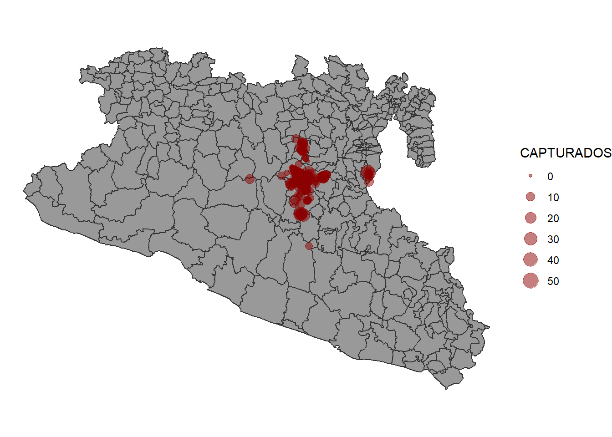

Lab IIb: Reactivity
1 Introduction
Objective:
In this lab we will focus on reactivity. We will work with messages and buttons to make our app more efficient.
We will continue working in the app we created in previous labs. Now
we will focus on improving the user interaction and tools to a better
communication between the server and the UI.
In this lab we will introduce two new libraries: sf, for
spatial data manipulation; and plotly, to make interactive
figures.
# Load the libraries
library(shiny)
library(dplyr)
library(ggplot2)
library(shinydashboard)
library(STNet)
library(sf) # to manipulate spatial objects
library(plotly) # For interactive plots2 Maps
We will introduce a new data set from the STNet library. This new data set is a shape file with the administrative units of Mexico. Since we are only using a small area, we will filter the data set to only include the ones from teh study area.
# Load the data
data("vac")
data("vigilancia")
data("captura")
# Loading the spatial data from the package
MxShp <- st_read(system.file("data/MxShp.shp", package = "STNet")) %>%
filter(CVE_ENT %in% c('15', '12', '16')) # Filter the data to use the states with codes: 15, 12 y 16## Reading layer `MxShp' from data source
## `C:\Users\jpablo91\AppData\Local\Programs\R\R-4.2.1\library\STNet\data\MxShp.shp'
## using driver `ESRI Shapefile'
## Simple feature collection with 2471 features and 6 fields
## Geometry type: MULTIPOLYGON
## Dimension: XY
## Bounding box: xmin: 1058748 ymin: 319149.1 xmax: 4082958 ymax: 2349605
## Projected CRS: MEXICO_ITRF_2008_LCCNow we will project the locations from the captures. First we will
transform our table of captures to a POINT simple features collection
(spatial points) using the function st_as_sf(). For this
function we specify the coordinate reference system (CRS) and the name
of the columns that contains the latitude and longitude (or X and
Y).
Then we use the function st_transform() to project our data
in the same projection as the data set of locations.
# Convert and project the data
capturaSp <- captura %>%
st_as_sf(crs = st_crs(4326), # Coordinate reference system
coords = c('LONG', 'LATITUD')) %>% # Name for columns with lat and lon
st_transform(crs = st_crs(MxShp)) # transform to the MxShp crs2.1 Making the figure
The data for the captures has the number of animals captures and the locations by year. We will make a map that includes the number of animals captured by year and in the background the municipalities of the region.
p <- ggplot() + # we call ggplot
geom_sf(data = MxShp, fill = 'grey60', col = 'grey20') + # This will be our base map
geom_sf(data = capturaSp, aes(size = CAPTURADOS), alpha = 0.5, col = 'red4') + # We add the points
theme_void() # select a theme without the grid
p
2.2 Incorporating the code in the app.
2.2.1 New output in UI
We will now create a new box in the tab for the captures data:
tabItem(tabName = 'tab3', # Name we use for the tab
fluidRow(
column(width = 12,
# ... , # Here goes the code from the previous figure
box(title = 'Capture locations', width = 6,
plotOutput('CapturaMap')
)
)
)
)2.2.2 Modify the reactive event
We can use the same reactive event that we had previously on the bar
plot making some modifications in the code. Previously we called the
object capturas to do the filtering of the data in the
reactive event z(), but now we can change the object
capturas for our spatial object we just created
capturasSp so we can use it to make both the map and the
bar plot.
Our new reactive object will look like this:
z <- eventReactive(input$filter, {
p <- capturaSp %>% # This is the spatial points data we just defined before
filter(NOM_MUN %in% input$Mun,
between(YEAR, input$year[1], right = input$year[2])) # here we do the filtering
})2.2.3 Incorporating the figure in the server
Now we will create our figure into a new output called ‘CapturesMap’
output$CapturesMap <- renderPlot({
ggplot() +
geom_sf(data = MxShp, fill = 'grey60', col = 'grey20') +
geom_sf(data = z(), aes(size = CAPTURADOS), alpha = 0.5, col = 'red4') +
theme_void()
})We can run the app to see the changes.
4 Interactive plots.
In this last part of the lab we will introduce to interactive plots
wie the plotly library.
This library has its own syntax to make the graphics, but it also has a
very convenient function to transform any ggplot2 figure to
an interactive version.
In the map we previously create, the points are a bit clustered and can
be dificult to actually see whats happening, we will use the
ggplotly() function to convert the figure we previously
made into an interactive version of it. This will provide some tools for
zooming and paning the figure.
ggplotly(p) # Function to convert our figure to an interactive version
We can integrate our new figure into the app modifying a little bit the code. This new output will be no longer of the type ‘plot’ so we will need to change the functions for specifying the type of output and rendering it.
4.1 Modifying the output
Previously, we used plotOutput() to indicate that our
output is a plot, now we will change it to plotlyOutput()
to indicate that is an interactive plot from plotly.
tabItem(tabName = 'tab3',
fluidRow(
column(width = 12,
# ... , # here is where tour code for the previous figure goes ...
box(title = 'Locations of the captures', width = 6,
plotlyOutput('CapturesMap')
)
)
)
)4.2 Modifying the render
Now we will change the function renderPlot() that we
previously used for the function renderPlotly() to indicate
that we have a different type of output.
We will also convert our ggplot figure with the function
ggplotly().
output$CapturaMap <- renderPlotly({
p <- ggplot() +
geom_sf(data = MxShp, fill = 'grey60', col = 'grey20') +
geom_sf(data = z(), aes(size = CAPTURADOS), alpha = 0.5, col = 'red4') +
theme_void()
ggplotly(p)
})5 Exercise.
Try using ggplotyl() to change the plots that we
previously created into interactive plots.